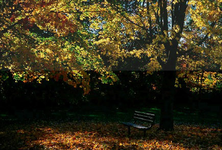

|
UV-Protection Print SpraysVersion 1.0, © 2004 by Dale Cotton, all rights reserved I print the majority of my images on matte paper. Some matte papers have a textured surface that adds a subtle charm to the final print; but the texture is difficult to see behind glass. We frame prints behind glass to guard them from physical damage, such as tears and scratches, but also to guard against chemical damage, such as fading and discoloration. I would very much like to find an alternate to glazing that would allow the viewer to see the subtleties of my prints without the ever-present obscuration of glass glare. We read on the Wilhelm Research web site that the use of UV-protection sprays can dramatically improve the longevity of a matte-finish print. [I do not propose to attempt my own longevity testing; Mr. and Mrs. Wilhelm, having pioneered the field of photographic longevity research, have my full confidence in this regard.] For example, Henry Wilhelm reports that Epson's excellent Velvet Fine Art paper combined with UltraChrome pigment inks will last 34 years displayed under gallery conditions but without glass; and this number increases to 55 years, if PremierArt Print Shield spray has been applied. A competing product is Krylon's UV-Resistant Clear spray, which I would guess offers a similar bump in longevity. Furthermore, both these sprays claim to add water-resistance. In art school we used to apply a lacquer spray to pastels and charcoals to prevent smudging by blowing through a very fine tube applicator. (Before that I simply used my mother's hair spray. ;) The idea is to apply a fine mist of the sprayed lacquer evenly so that the entire surface area is coated but no area is saturated. Both the PremierArt and the Krylon products come in aerosol cans and both go on nicely, with no great skill needed to avoid streaking. What you do need is a breeze-free but well-ventilated and well-lighted area to work in and preferably a mask to prevent inhalation, since one can assume that adding a lacquer coating to the inside of one's lungs would be a tad self-defeating. The Krylon product comes in two variants: one for a gloss finish and one for a matte finish: I tried both. Fortunately, I used discard prints for my testing. The matte finish spray, even with a single light coat, caused a very pronounced haziness that turned the blacks into charcoal greys:  Fig 1. Simulation of spray applied to half a print The gloss finish variant had the same effect, but to a much lesser degree. With both variants, I covered half a print with black and shadow areas, so the spray was only applied to the exposed half of the print. After spraying and allowing the print to dry over night I could very easily see where the spray had been applied because of the lightening of the darks. Also, both sprays left a coarse, sandpapery feel to the paper, as if the lacquer particles were rather large. After using the Krylon products, the PremierArt spray was a delight. I simply could not distinguish between sprayed and unsprayed portions of the print by sight, either from haze or from sheen, and there was no sense of coarseness by touch. Neither product makes any claims to provide scratch and scuff protection ... although I'm sure such protection would result if you applied a sufficient number of coats. ;) Using the recommended two or three light coats, one probably gains a very slight increase in scuff protection - just not enough to write home about. In short: if you are selling matte-finish prints, using the PremierArt product would seem to be a no-brainer with no downside except a modest cost in time and money per print. |